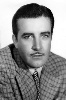

Country:United States, 71 minutes
Spoken languages:
Genres:Drama, Horror, Sci-Fi
Director(s):James Whale
Writer(s):Mary Shelley, Francis Edward Faragoh, Garrett Fort, Robert Florey
Video Codec:Unknown
Number: 1088


Certification:NR
Storyline:
Dr. Henry Frankenstein attempts to create life by assembling a creature from body parts of the deceased. Aided by his loyal misshapen assistant, Fritz, Frankenstein succeeds in animating his monster, but, confused and traumatized, it escapes into the countryside and begins to wreak havoc. Frankenstein searches for the elusive being and eventually must confront his tormented creation.
Cast: 


Medium: Original DVD,
Loaned: No
Aspect ratio: Unknown